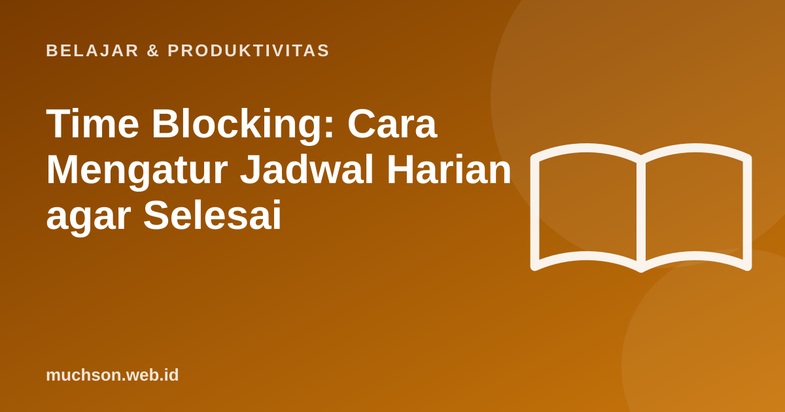

Beranda › Artikel › Belajar & Produktivitas
Belajar & ProduktivitasTime Blocking: Cara Mengatur Jadwal Harian agar Selesai
Daftar tugas panjang tidak memberi tahu kapan setiap tugas dikerjakan. Akibatnya, hari habis untuk membalas pesan dan rapat, sementara pekerjaan penting tertunda. Time blocking mengubah daftar tugas menjadi jadwal: setiap pekerjaan mendapat blok waktu di kalender, seperti janji temu dengan diri sendiri.

Apa itu time blocking?
Time blocking adalah membagi hari menjadi blok-blok waktu, masing-masing untuk satu jenis pekerjaan. Bedanya dengan daftar tugas: daftar tugas menjawab "apa", time blocking menjawab "apa dan kapan".
| Jam | Blok |
|---|---|
| 08.00-08.30 | Rencanakan hari, cek email singkat |
| 08.30-10.30 | Kerja mendalam: laporan kuartal |
| 10.30-11.00 | Balas pesan dan email (batch) |
| 11.00-12.00 | Rapat tim |
| 13.00-14.30 | Kerja mendalam: desain presentasi |
| 14.30-15.00 | Blok cadangan |
| 15.00-16.30 | Tugas ringan: administrasi, telepon |
| 16.30-17.00 | Tutup hari: tinjau, rencanakan besok |
Langkah membuat jadwal
- Daftar tugas hari itu atau minggu itu.
- Pilih 1-3 tugas terpenting (bisa memakai matriks Eisenhower).
- Taruh tugas terpenting di jam energi terbaik Anda, biasanya pagi bagi banyak orang.
- Kelompokkan tugas sejenis: semua email di satu blok, semua telepon di satu blok.
- Sisipkan blok cadangan untuk hal tak terduga.
- Tinjau di akhir hari dan sesuaikan jadwal besok.
Jebakan: perkiraan waktu yang terlalu optimis
Psikolog menyebutnya planning fallacy: kita cenderung meremehkan berapa lama sebuah tugas akan selesai, bahkan ketika pengalaman sebelumnya menunjukkan tugas serupa memakan waktu lebih lama. Buehler, Griffin, dan Ross (1994) menemukan mahasiswa secara konsisten terlalu optimis memperkirakan waktu menyelesaikan tugas akademiknya.
Catat perkiraan dan waktu sebenarnya selama seminggu. Dari situ Anda tahu faktor koreksi pribadi Anda, yang jauh lebih akurat dari tebakan.
Variasi time blocking
| Variasi | Cara | Cocok untuk |
|---|---|---|
| Task batching | Mengelompokkan tugas sejenis dalam satu blok | Email, pesan, administrasi |
| Day theming | Satu hari untuk satu tema (Senin rapat, Selasa produksi) | Peran dengan banyak jenis pekerjaan |
| Timeboxing | Batas waktu tetap untuk tugas, berhenti saat waktu habis | Tugas yang cenderung melebar |
Buat jadwal Anda
Tanya jawab
Apa itu time blocking?
Bagaimana jika jadwal berantakan karena hal mendadak?
Berapa panjang blok yang ideal?
Apa bedanya dengan Pomodoro?
Sumber dan bacaan lanjut
- Buehler, R., Griffin, D., & Ross, M. (1994). Exploring the "planning fallacy". Journal of Personality and Social Psychology
- Matriks Eisenhower (artikel terkait)
- Teknik Pomodoro (artikel terkait)